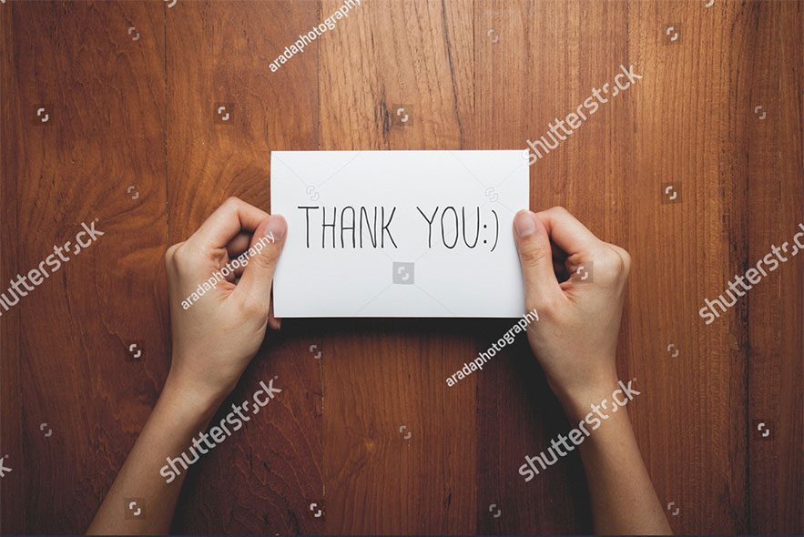

100 способов сказать:
"спасибо"
Как часто вы благодарите окружающих?
Уверены, что каждый день!
Но сегодня мы подготовили для вас небольшой сюрприз — 100 способов, как сказать «Спасибо!» близким людям.
Выбирайте любой понравившийся, а еще лучше — сразу все!
- Улыбнитесь и сохраняйте зрительный контакт.
- Оставьте приятную благодарственную записку.
- Угостите шоколадом.
- Скажите «Спасибо!» с помощью языка жестов.
- Пришлите СМС с позитивными эмодзи.
- Наклейте стикер с добрыми словами на рабочее место.
- Скажите «Спасибо!» в присутствии других.
- Пригласите в кафе.
- Купите звезду в подарок.
- Сделайте яркую открытку своими руками.
- Сделайте реверанс.
- Отправьте презент курьерской почтой.
- Нарисуйте граффити на асфальте.
- Позвоните с неизвестного номера и скажите комплимент.
- Запишите благодарственное видео.
- Доставьте букет цветов.
- Сделайте принт с благодарностью на футболке.
- Спойте песню.
- Пришлите письмо в бутылке.
- Скажите «Спасибо!» на иностранном языке.
- Расскажите, за что вы цените человека
- Подарите подарок без повода.
- Уступите место в автобусе.
- Улыбнитесь.
- Напишите «Спасибо!» на песке пляжа и сделайте фото.
- Принесите чашку горячего кофе.
- Приносите кофе весь день.
- Пригласите в кино.
- Назовите причину благодарности.
- Подарите сертификат на впечатление.
- Угостите всех пиццей.
- Подарите подарок ВКонтакте.
- Подарите полезную книгу с персональной подписью.
- Позвоните утром и пожелайте хорошего дня.
- Помогите по хозяйству.
- Помогите по хозяйству.
- Поблагодарите через любимую радиостанцию.
- Замените «Спасибо!» на «Благодарю!».
- Просто обнимите.
- Напишите помадой на зеркале.
- Неожиданно переведите деньги на банковскую карту.
- Создайте благодарственный плакат своими руками.
- Подарите то, о чем человек долго мечтал.
- Пригласите в гости.
- Выразите признательность в стихах.
- Напишите благодарственный пост в Facebook.разные поступки.
- Спросите, чем можете помочь в ответ.
- Пригласите на чай.
- Научите человека чему-то новому.
- Отправьтесь на прогулку вместе.
- Сервируйте стол для красивого завтрака.
- Дайте волю эмоциям.
- Создайте магнит с вашей фотографией на холодильнике.
- Оставьте письмо в конверте на лобовом стекле автомобиля.

- Подарите бутылку любимого вина.
- Создайте календарь с вашими лучшими фотографиями.
- Пригласите на спортивное мероприятие.
- Пришлите несколько милых подбадривающих СМС в течение дня.
- Подарите воздушный шар с сюрпризом.
- Оставьте печенье с предсказаниями.
- Испеките сладкие вафли.
- Создайте баночку-сюрприз – со «Спасибо!» за разные поступки.
- Сделайте фотоколлаж.
- Подарите уютный плед.
- Сделайте комплимент.
- Скажите «Я очень ценю это!».
- Создайте свою доску почета.
- Подарите профессиональную фотосессию.
- Закажите доставку фруктов зимой или мороженого летом.
- Поставьте «лайк» в социальной сети.
- Помогите расслабиться – подарите сеанс массажа.
- Создайте плейлист с музыкой, которая напоминает вам друг о друге.
- Выслушайте близкого человека.
- Пригласите на танец.
- Придумайте песню о человеке.
- Попросите «звезду» поблагодарить человека в своей социальной сети.
- Подарите подарок ребенку человека.
- Свяжите необычный шарф.
- Создайте список всего, что сделал для вас человек.
- Снимите небольшой фильм.
- Сделайте татуировку с именем человека.
- Назовите кота в честь человека.
- Закажите песню на радио.
- Сходите вместе в зоопарк.
- Погладьте по голове.
- Оставьте несколько конфет в неожиданных местах.
- Подарите живой цветок.
- Наполните ванну шампанским.
- Приготовьте вкусный чай.
- Устройте вечеринку в честь человека.
- Напишите благодарственное письмо.
- Продемонстрируйте свое внимание.
- Закажите билборд с благодарностью.
- Купите шапку и варежки.
- Носите человека на руках.
- «Поморгайте» аварийкой.
- Дайте «пять!».
- Помойте посуду.
- Привезите сувенир из путешествия.
- Поставьте памятник человеку.